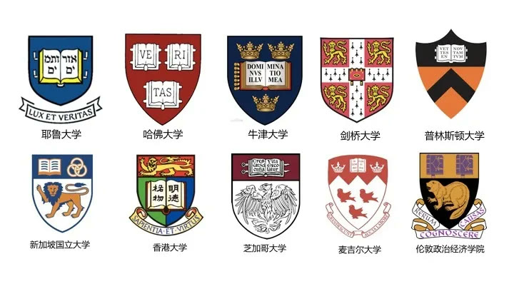

01 · 事业
从内容产品到知识服务品牌
得到需要的不只是APP图标，而是能够代表长期学习、知识信用和共同体的品牌身份。
02 · 语言
用超级口号集中品牌目的
固定语言负责解释得到为用户提供什么价值，并能在课程、活动和传播中持续复述。

03 · 符号
猫头鹰与盾牌形成校徽式识别
猫头鹰连接智慧文化原型，盾牌提供稳定、庄重的结构；组合后既熟悉又具有得到专属性。

04 · 应用
让超级符号在使用中不断壮大
图标、课程、文创和活动持续重复同一识别，使符号随业务触点增加而积累，而不是每次重新设计。